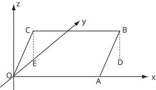

Long description: 37_5_ext

Alt text: A graph in three dimensions shows a parallelogram OABC with vertices O, A, B, and C connected by lines on the plane z equals y.
This description was generated by AI and has not been verified by a human. If you spot an error, please use the feedback link below.
- The image displays a three-dimensional coordinate system with labeled axes for x, y, and z.
- A parallelogram OABC is drawn on the plane defined by the equation z equals y.
- The vertices of the parallelogram are labeled O at the origin, A on the x-axis, B, and C.
- From the origin O, a line segment extends to the point C, which is labeled as part of the parallelogram's boundary.
- A dashed line is shown extending vertically from point C down to the plane containing the x and y axes, and a similar dashed line connects the parallelogram's edge to the projection on the x-axis.
- Another dashed line drops from point B to the projection onto the x-axis, creating a rectangular projection on the xy-plane defined by the points (0, y_B, 0) and (x_A, 0, 0).
- The sides OA and the projection of CB are parallel to the x-axis, while OC and the projection of AB are related to the y-axis direction, illustrating the plane z equals y.